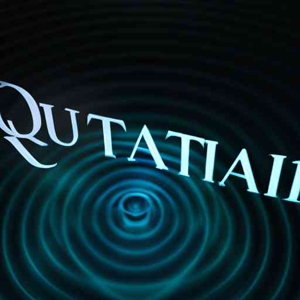

Quantum AI: Navigating the Intersection of Two Radical Realities

Unlocking the Quantum World
To appreciate Quantum AI, we first need to understand quantum physics, the parent science that makes it all possible. This branch of physics explores the strange, often counter-intuitive world of the smallest particles of the universe. It deals with bits termed as 'qubits,' which, unlike traditional bits that can be either a 0 or a 1, can exist in multiple states at once. This phenomenon, known as 'superposition,' allows quantum computers to process massive amounts of data simultaneously.
'Bell states' or entangled particles, another bizarre feature of quantum physics, stands as an integral pillar of quantum computing. Entanglement allows two qubits that are entangled to share their state instantaneously, no matter how far apart they are. This feature, teamed with superposition, significantly amplifies the computing power in a quantum computer. This whole new realm of possibilities is what quantum computing brings to the table.
Integrating Quantum Computing with AI
Now, imagine coupling this computational muscle with the learning and problem-solving capacity of AI. That's Quantum AI in a nutshell. This multidisciplinary field explores the interaction between quantum computing and AI, particularly focusing on how quantum algorithms can enhance machine learning, thereby improving computation of complex AI algorithms.
Quantum algorithms such as Grover’s and Shor’s provide a speedup for some computational tasks, offering the potential for significant leaps forward in machine learning and optimization problems —areas where AI struggles with today's classical computers. QAI, therefore, heralds a new era of innovation, where data analysis, decision-making processes, and complex problem-solving can be executed faster and more efficiently.
Quantum AI in Practice: Real-World Examples
While Quantum AI is still in its infancy, leading tech giants, research institutions, and startups are already investing heavily in fostering its growth. Google’s Quantum AI Lab, for example, is developing a quantum machine learning software platform, aiming to use superposition and entanglement to make machine learning more powerful.
Additionally, IBM has launched a research initiative to explore the application of quantum computing for machine learning, hoping to devise novel algorithms that can run on quantum processors. And it's not just tech giants alone; startups like Xanadu and Zapata Computing are developing their quantum software platforms, contributing to the rapid advancement of the field.
Peering into the Future
The merging of quantum computing and AI holds unprecedented potential. But as with every sophisticated technology, the journey of Quantum AI is not without challenges. The field grapples with hardware constraints, absence of standardization, and the need for highly specialized skills. Not to mention, it also presents novel ethical and security quandaries.
However, these challenges don’t lessen the fascination and promise that Quantum AI embodies. If anything, they inspire scientists and researchers to investigate, experiment, and innovate further. The integration of quantum computing and AI constitutes a formidable technological force, promising to propel us into a future where complex calculations can be crunch time instantaneously, where AI models can be trained rapidly, and where the decision-making process in various industries can be significantly enhanced.
Quantum AI, with its thrilling possibilities and mind-boggling complexities, is certainly an underexplored frontier, not just in science, but in our comprehension of reality. While it will require years of research and immense computational advancement to fully realize its potential, it is certain to continue to captivate us, pull us in with its mystery, and push us towards the precipice of a radical reality. Thus, as we continue to decode this ground-breaking amalgamation, one thing stands clear: the impact of Quantum AI on our future will be nothing short of transformative.